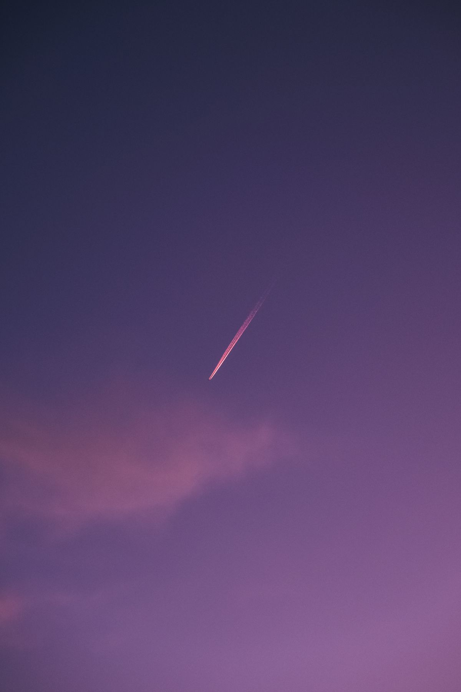
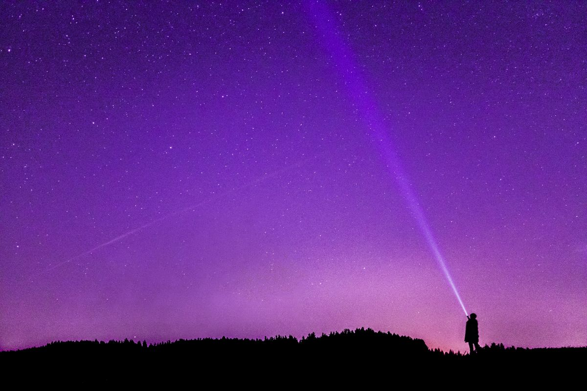
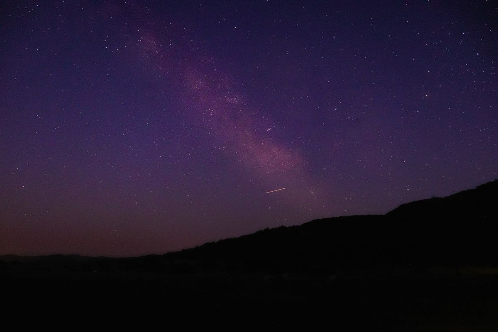

Hujan meteor Leonid memuncak pada dini hari 17 sampai 18 November 2026, dan kamu bisa melihatnya dari Indonesia tanpa teleskop, tanpa tiket, tanpa biaya apa pun. Yang kamu butuhkan hanya langit gelap, cuaca cerah, dan kesabaran.
Leonid adalah hujan meteor tahunan yang terjadi saat Bumi melintasi debu peninggalan komet 55P/Tempel-Tuttle. Butiran debu itu terbakar di atmosfer dan terlihat seperti garis cahaya yang melesat cepat di langit. Tahun ini Leonid aktif sejak 6 November dan puncaknya jatuh pada malam 17 sampai 18 November 2026, menurut panduan pengamatan langit NASA. Dalam kondisi langit yang benar-benar gelap, laju yang diperkirakan sekitar 15 meteor per jam. Angka itu laju ideal, bukan janji, karena polusi cahaya dan awan sangat memengaruhi jumlah yang benar-benar terlihat. Bulan sedang berada di fase kuartal pertama dan terbenam tidak lama setelah tengah malam, sehingga langit di jam terbaik justru gelap. Waktu terbaik menonton adalah setelah tengah malam sampai menjelang subuh, dengan mata telanjang, jauh dari lampu kota. Siapkan jaket dan alas untuk berbaring, karena kamu akan lama mendongak.
Kenapa hujan meteor Leonid tiba-tiba trending?
Pencarian kata hujan meteor melonjak di Google Trends Indonesia pada Sabtu pagi, 7 November 2026. Pemicunya sederhana: Leonid mulai aktif sehari sebelumnya, pada Jumat 6 November, dan orang langsung mencari jadwal puncaknya. Leonid bukan fenomena baru. Hujan meteor ini datang setiap November, tahun demi tahun, karena Bumi selalu melewati jalur debu yang sama. Yang membuatnya ramai tahun ini adalah waktunya yang pas: puncaknya jatuh pada malam Selasa menuju Rabu, dan kondisi Bulan sedang mendukung, jadi kabar tentangnya cepat menyebar di media sosial dan portal berita. Fenomena langit memang punya pola seperti itu. Sekali ada satu artikel yang menjelaskan jadwalnya, pencarian ikut naik, lalu makin banyak orang yang ikut mencari. Kalau kamu termasuk yang baru dengar Leonid minggu ini, kamu tidak ketinggalan. Puncaknya masih sembilan hari lagi dari hari ini, Minggu 8 November, jadi ada waktu untuk merencanakan tempat menonton.
Kapan waktu terbaik melihat Leonid dari Indonesia?
Jawaban singkatnya: dini hari 17 sampai 18 November 2026, setelah tengah malam sampai menjelang subuh. Itu jendela yang disarankan NASA dalam panduan pengamatan langit November 2026. Alasannya dua. Pertama, rasi Leo, titik asal semu meteor ini, baru naik cukup tinggi setelah tengah malam, jadi makin larut makin banyak meteor yang terlihat. Kedua, Bulan yang sedang berada di fase kuartal pertama terbenam tidak lama setelah tengah malam, sehingga langit pada jam-jam terbaik justru gelap tanpa silau Bulan. Laju yang diperkirakan sekitar 15 meteor per jam dalam kondisi ideal. Artinya, dari tempat yang benar-benar gelap kamu bisa melihat satu meteor setiap beberapa menit. Dari dalam kota yang terang, jumlahnya akan jauh lebih sedikit, dan itu wajar. Jangan terpaku pada satu jam tertentu. Para pengamat menyarankan menonton selama satu sampai dua jam, karena meteor datang bergelombang, kadang sepi beberapa menit lalu muncul dua sekaligus.

Bagaimana cara melihat hujan meteor Leonid?
Kabar baiknya, menonton hujan meteor tidak butuh alat apa pun. Teleskop justru tidak membantu, karena meteor melintas di bidang langit yang luas dan teleskop hanya melihat sebagian kecil langit. Yang kamu butuhkan adalah mata telanjang dan langit yang luas. Berikut langkah yang disarankan NASA dan para pengamat meteor.
- Cari tempat segelap mungkin, jauh dari lampu jalan dan lampu kota. Pantai yang sepi, dataran tinggi, atau halaman rumah di desa jauh lebih baik daripada balkon apartemen di tengah kota.
- Datang sebelum tengah malam dan beri matamu waktu sekitar 30 menit untuk beradaptasi dengan gelap. Selama waktu itu, jangan menatap layar ponsel yang terang, karena mata akan kembali silau.
- Berbaringlah dan pandang langit seluas mungkin, bukan hanya ke arah rasi Leo. Meteor bisa muncul di bagian langit mana pun.
- Cek prakiraan cuaca sebelum berangkat. November sudah masuk musim hujan di sebagian besar wilayah Indonesia menurut BMKG, dan awan tebal bisa menutup langit tepat di malam puncak. Bila langit berawan, jangan memaksakan diri. Leonid aktif sampai 30 November, jadi masih ada malam lain untuk mencoba, meski jumlah meteornya lebih sedikit daripada malam puncak.

Apa yang membuat Leonid istimewa?
Leonid berasal dari debu komet 55P/Tempel-Tuttle, komet yang mengelilingi Matahari sekitar 33 tahun sekali. Setiap November, Bumi melintasi jalur debu yang ditinggalkan komet itu, dan butiran debu sekecil pasir terbakar di atmosfer dengan kecepatan sekitar 70 kilometer per detik. Itu termasuk meteor tercepat yang pernah dicatat, dan kecepatannya membuat kilatan Leonid tampak terang dan melesat sangat cepat. Leonid juga terkenal karena sejarah badai meteornya. Sekitar tiap 33 tahun, saat Bumi melewati gumpalan debu yang lebih padat, langit bisa dipenuhi ribuan meteor per jam. Badai besar terakhir terjadi pada 2002, menurut Fox Weather. Tahun ini tidak ada badai yang diprediksi. Perkiraan resminya sekitar 15 meteor per jam dalam kondisi ideal, dan para pengamat sepakat tahun 2026 termasuk tahun yang tenang untuk Leonid. Harapan yang jujur justru membuat pengalaman menonton lebih enak. Kamu tidak menunggu hujan meteor yang deras, kamu menunggu kilatan cepat yang muncul sesekali di langit yang gelap, dan tiap satu yang tertangkap mata terasa seperti hadiah kecil.

Jadi, tandai kalendermu: dini hari 17 sampai 18 November 2026. Cari tempat gelap, jauhkan layar ponsel, berbaring, dan biarkan matamu menyesuaikan diri. Bila cuaca mendukung, kamu akan melihat kilatan Leonid melesat tanpa perlu membayar apa pun. Dan kalau malam puncak ternyata berawan, ingat Leonid masih aktif sampai 30 November, jadi masih ada kesempatan lain sebelum bulan berganti. Kalau kamu suka berburu fenomena langit, baca juga artikel tentang Hunter's Moon 26 Oktober 2026 di rubrik Other.
Sumber dan Info Resmi
Angka dan tanggal di artikel ini merujuk ke sumber berikut:
- NASA: puncak Leonid dini hari 17-18 November 2026, sekitar 15 meteor per jam dalam kondisi ideal, waktu terbaik setelah Bulan terbenam, mata butuh sekitar 30 menit beradaptasi dengan gelap.
- timeanddate: Leonid aktif 6-30 November 2026, puncak sekitar 17-18 November, sampai 15 meteor per jam, Bulan kuartal pertama terbenam sekitar tengah malam, Mars dan Jupiter tampak berdekatan di rasi Leo.
- Natural History Museum London: Leonid aktif 6-30 November 2026, puncak 17 November, berasal dari komet 55P/Tempel-Tuttle, kecepatan sekitar 70 kilometer per detik, sampai 15 meteor per jam.
- BBC Sky at Night Magazine: puncak diperkirakan sekitar 01.00 UT 18 November, pengamatan terbaik setelah tengah malam sampai fajar, mata telanjang lebih baik daripada teleskop.
- Rival: pencarian hujan meteor melonjak di Google Trends Indonesia pada Sabtu pagi 7 November 2026, Leonid aktif sejak Jumat 6 November, puncak 17-18 November 2026.
- Topik.id: kalender AMS dan IMO, Leonid puncak 16-18 November, NASA menyarankan pengamatan dini hari 17-18 November setelah Bulan terbenam, komet 55P/Tempel-Tuttle mengorbit sekitar 33 tahun sekali.
- BMKG: pada November 2026 sebagian besar wilayah Indonesia diprediksi mengalami curah hujan kategori menengah 68,62 persen, jadi awan dan hujan berpotensi menutup langit di malam puncak.
- Fox Weather: Leonid memicu badai meteor sekitar tiap 33 tahun dengan sedikitnya 1.000 meteor per jam, badai besar terakhir terjadi pada 2002.
- Skyflux: tidak ada badai atau ledakan yang diprediksi untuk 2026, laju sekitar 15 meteor per jam, kecepatan sekitar 71 kilometer per detik.